Clean Refresh
The picked PLAY / SP layout, with cobalt, marigold and a solid two-eyed pixel ghost.
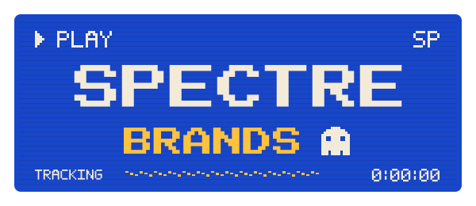
← All previews · Round 1: VHS variations
Round 2, built on the chosen V10 “VCR On-Screen Display”: redesigned pixel ghost, rental-store blue + yellow (deliberately not Blockbuster’s exact colours) plus classic blue-screen, green-phosphor, amber and black/teal CRT palettes. Each lockup is shown on cream and on black, with its mark at 64, 32 and 16 px. Flat inks and outlined lettering; design preview only, not in production. Full contact sheet · Proposed site palette (rental-store blue + yellow).
The picked PLAY / SP layout, with cobalt, marigold and a solid two-eyed pixel ghost.

A stepped triangular ghost with eyes and a pixel hem becomes the PLAY cursor itself.
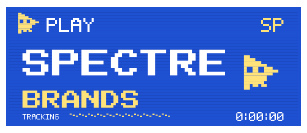
Two-line lockup in very chunky 8x8-grid OSD caps with no scanline cuts through the letters; a ghost built on the same 8x8 grid closes the BRANDS line.
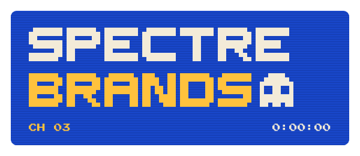
Cobalt OSD where the C of SPECTRE keeps its full shape and a small marigold ghost sits inside its mouth, peeking out toward the T; the word still reads as SPECTRE.
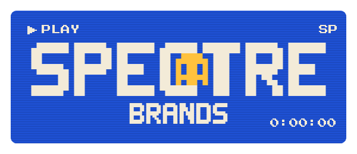
A ghost selects SPECTRE BRANDS in a CLOCK SET / CHANNEL / TRACKING VCR menu.
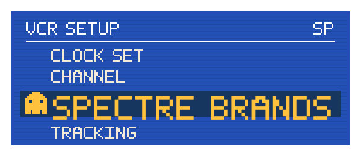
A large -0:13:13 tape counter and REW arrows accompany two successive ghost positions.
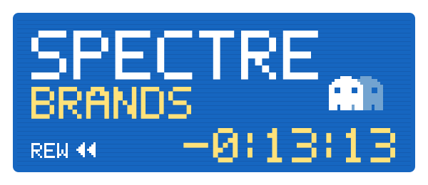
Tube-blue screen with a butter "|| PAUSE" readout; the ghost is frozen mid-float, its lower half jittering sideways with the classic paused-tape shake band along the bottom.
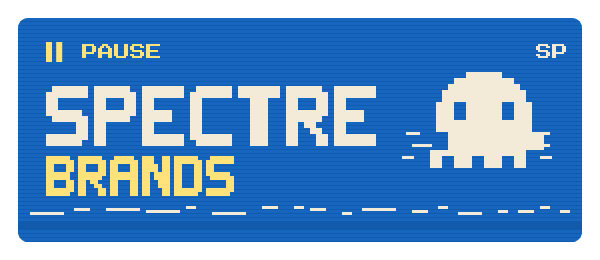
Cobalt OSD reading "TIMER REC 12:00" — the record dot swapped for a marigold ghost, and the clock stuck flashing 12:00 like every VCR ever.
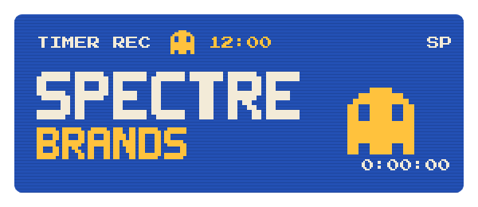
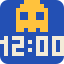
A 900×160 OSD strip with a ghost PLAY cursor, one-line name and SP status for 32–40px headers.
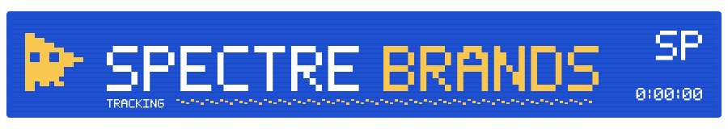
A square blue screen puts a large butter-yellow ghost above small, crisp SPECTRE BRANDS caps.
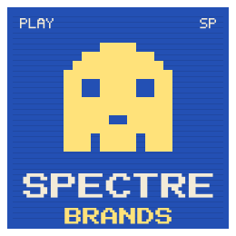
The OSD lives inside a flat-drawn 80s set: putty bezel, dial, knobs, grille and rabbit ears; cobalt screen with butter PLAY readout, wordmark and ghost.
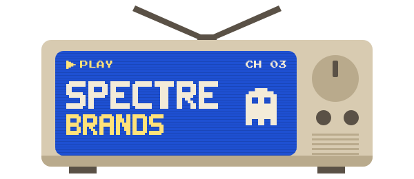
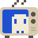
Butter-yellow rental sticker with a cobalt frame reading "NOW PLAYING ON" above an inset cobalt OSD screen that carries the wordmark and ghost.
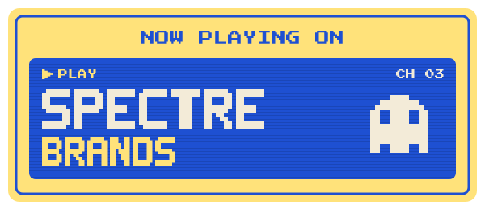
Classic #0000AA VCR blue, tall white OSD capitals and a plain white pixel ghost.
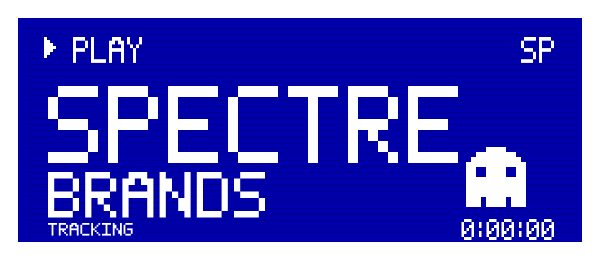
A VCR blue screen full of two-colour TV snow; the ghost is the clear patch in the static, its eyes two solid blocks of snow. OSD boxes carry CH 03 and the wordmark.
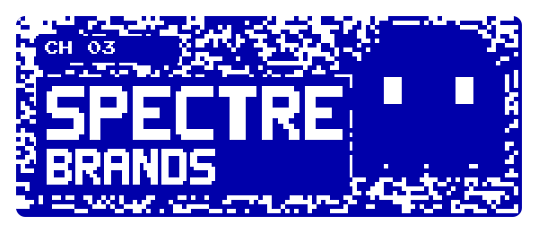
Flat green phosphor, a stepped ghost and a softly rounded CRT monitor bezel.
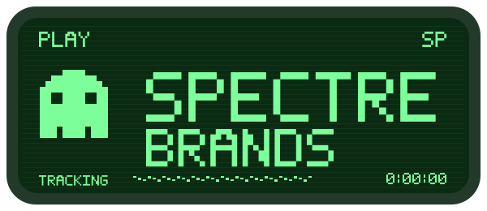
Green-phosphor OSD: the two rewind chevrons of "<< REW" are two little ghosts glancing back, with the counter running down and the wordmark below.
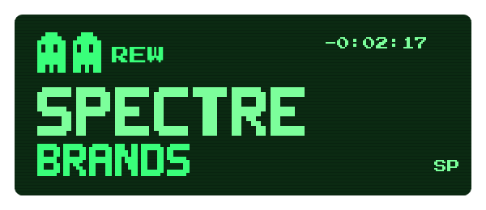
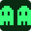
Rewind/play triangles, square STOP eyes and PAUSE bars assemble an amber OSD ghost.
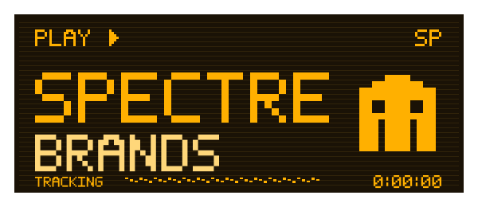
Amber-on-black terminal screen set in period monospace type (VT323), a tagline prompt line and the pixel ghost parked at the cursor.
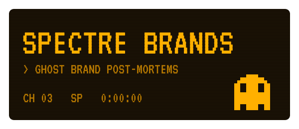
A controlled teal tracking offset ghosts the white wordmark and its small pixel mascot.
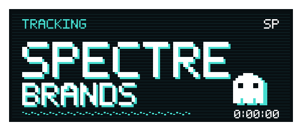
Late-90s black OSD in thin white type with teal readouts; the ghost is the blinking block cursor with eyes sitting after "SPECTRE BRANDS".
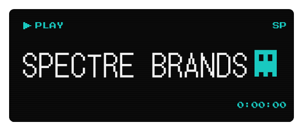